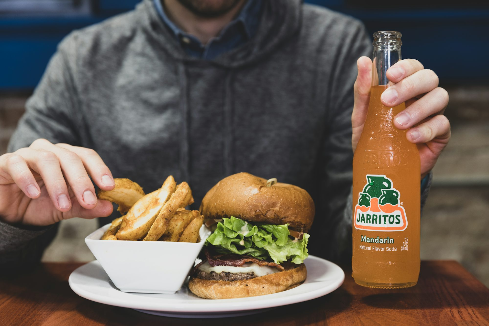

Subscribe Us
Reading hub

Exploring the World of Exotic Juices: A Flavorful Adventure
Dive into the diverse world of exotic juices, featuring unique ingredients, refreshing combinations, and health benefits that tantalize the taste buds.
Amara Chen

Burgers Unleashed: A Culinary Exploration of Flavor and Innovation
Dive into the world of burgers, where traditional recipes meet innovative techniques and unique flavors, transforming the classic dish into a gourmet experience.
Exploring the World of Gourmet Coffee: From Bean to Brew
This article takes readers on a journey through the fascinating world of gourmet coffee, exploring its origins, the roasting process, and various brewing methods to enhance flavor and aroma.
Ethan Thompson
03-17-2026

Exploring the Flavors of the World: A Journey Through Culinary Heritage
This article delves into the rich culinary heritage of various cultures, highlighting traditional dishes, cooking techniques, and the evolving landscape of modern gastronomy.

Exploring the Culinary Landscape: Trends Shaping Modern Dining
This article delves into the trends shaping modern dining experiences across various restaurant types, highlighting cultural influences, sustainability, and innovation in the culinary world.
12-06-2025